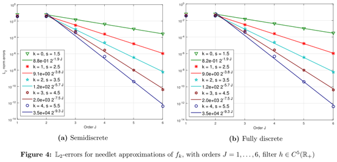
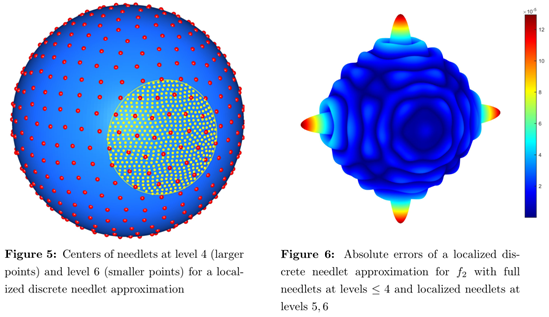

Spherical needlets are highly localized radial polynomials on the sphere \(\mathbb{S}^{d}\subset \mathbb{R}^{d+1}\), \(d\ge 2\), with centers at the nodes of a suitable cubature rule. The original semidiscrete spherical needlet approximation of Narcowich, Petrushev and Ward is not computable, in that the needlet coefficients depend on inner product integrals. In this work we approximate these integrals by a second quadrature rule with an appropriate degree of precision, to construct a fully discrete needlet approximation. We prove that the resulting approximation is equivalent to filtered hyperinterpolation, that is to a filtered Fourier-Laplace series partial sum with inner products replaced by appropriate cubature sums. It follows that the \(\mathbb{L}_{p}\)-error of discrete needlet approximation of order \(J\) for \(1 \le p \le \infty\) and \(s > d/p\) has for a function \(f\) in the Sobolev space \(\mathbb{W}_{p}^{s}(\mathbb{S}^{d})\) the optimal rate of convergence in the sense of optimal recovery, namely \(\mathcal{O}(2^{-J s})\). Moreover, this is achieved with a filter function that is of smoothness class \(C^{\lfloor\frac{d+3}{2}\rfloor}\), in contrast to the usually assumed \(C^{\infty}\). A numerical experiment for a class of functions in known Sobolev smoothness classes gives \(\mathbb{L}_2\) errors for the fully discrete needlet approximation that are almost identical to those for the original semidiscrete needlet approximation. Another experiment uses needlets over the whole sphere for the lower levels together with high-level needlets with centers restricted to a local region. The resulting errors are reduced in the local region away from the boundary, indicating that local refinement in special regions is a promising strategy.
|  |  |
| DisN Demo for Windows Version 1.0 | ||||
| DisN Demo for Linux and Unix Version 1.0 |